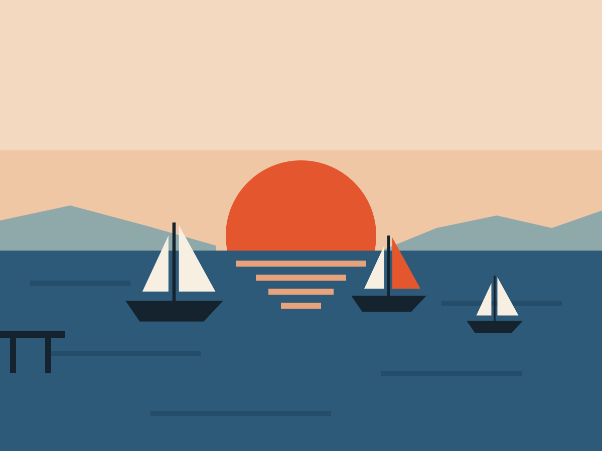
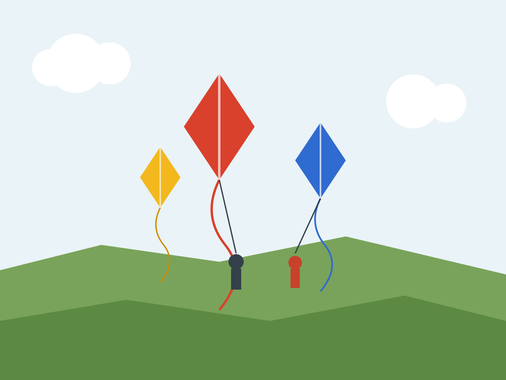

Foundations
Shape
Two line weights, three radius roles and a pill. A rectangle holds something, a circle or pill does something, and the only softening the guide allows is turning the corners of the rectangles on with one attribute.
Line weights
Two weights draw everything, and a third exists for one job. They are px on purpose: a 2px frame should stay 2px when the reader makes the text bigger, while everything else scales with rem.
--bw, 2px--bw-heavy, 4px| Token | Width | Use it for | Not for |
|---|---|---|---|
--bw | 2px | What you press or what contains: a card's frame, a button, a tile, an input, the bar of a panel. The hard shadow and the doubled frame of "selected" are the same weight. | A hairline between rows. |
--bw-thin | 1px | Only divides: the rule above a card foot, the rules between list rows, hr. | A frame, or anything a person has to find. |
--bw-heavy | 4px | Forced-colours mode and nothing else: the Highlight outline on hover and focus, the border of a selected thing. See Interaction. | Anything in the normal look. |
--ring | 3px | The focus ring, with --ring-offset (3px) between it and the element, or --ring-offset-in (2px) inside something that clips. | A decorative outline. |
Lint fails any literal border or outline width (border: 1px solid …) in the library: use one of these four tokens. Icons are drawn with a 2-unit stroke on a 24 grid, so they read as part of the same line work (see Icons).
Radius: three roles and a pill
Everything that is not a circle or a pill reads exactly three radius roles. They are the only radii a component may use, and src/ is the only file that sets them.
| Role | Square (default) | Soft | Read by |
|---|---|---|---|
--radius-card | 0 | --radius-3, 24px | The card's frame (--card-radius). |
--radius-tile | 0 | --radius-2, 12px | The square icon tile at the head of a row (.card__tile). |
--radius-ctl | 0 | --radius-1, 6px | The small square control in a bar (.card__ctl). |
--radius-pill | 999px | 999px | Buttons, circles, handles, action slots. The same in both styles. |
The three numbered steps --radius-1, --radius-2 and --radius-3 are only the values the soft block points at. A component asks for a role, never a step and never a number. Lint fails a literal radius such as 8px; a review should fail a step.
Square and soft
data-corners="square" is the default. data-corners="soft" turns the three roles on, on <html> for the whole app or on any element for an island. Nothing in src/components changes between them. Below, the same markup twice; the pill buttons are identical.
Square
Square
New
Decks
Twelve cards. Five known.
Soft
Square
New
Decks
Twelve cards. Five known.
- A card clips its contents.
.cardhasoverflow: clip, so media, bar and foot take the card's corners for free. Nothing inside needs its own radius to sit right. - One shape gesture per card. Round it or notch it, never both. The notch card stays square in both styles: its cut is the gesture.
- Tiled grids square off.
.card-grid--tiledsets--card-radius: 0so shared frames meet cleanly.
Both are implemented and the default is square, because that is what the owner's committed CSS does. To commit to soft in an app, write <html data-corners="soft">: no source changes, and choosing Square in a settings screen still works because SG.prefs then writes square down explicitly. To change the guide's own default instead, change the default block (:root, [data-corners="square"]) in src/ and DEFAULT_VALUE.corners in src/; without the second edit, choosing Square removes the attribute and leaves soft switched on. Nothing in src/components changes either way.
Rectangles hold, circles act
The shape of a thing tells you what it does before you read it.
| Shape | Means | Examples |
|---|---|---|
| Rectangle (square or soft) | Holds something. Not pressed itself, or pressed as one whole. | Card, panel, tile, input, bar, list. |
Pill or circle (--radius-pill) | Does something. Press it. | Button, round action, handle, toggle. |
The link card and the ghost card are the rectangles you press: each lifts as a whole (see Interaction) and is one link or one button, not a rectangle with a button inside.
Flat
No gradients, no blur, no glass, no translucency. The only shadow is hard-edged (zero blur) and means "you can press this"; nothing else gets one. The one exception is --scrim, behind a modal or under text on a photo. Drawing with box-shadow is fine when the shadow is a frame or a sheet (the doubled ring on a selected control, the two sheets behind a stack card); what is banned is a shadow that shades.
Ratios
Two aspect ratios are tokens. Media is 4 by 3, the flashcard is tall.
--ratio-media 4 / 3

--ratio-portrait 5 / 7

The count
Run this on any screen before calling it done. The machine checks what it can; the rest is your eye.
| Count | Allowed | Checked by |
|---|---|---|
| Line weights in use | Two | Lint: no literal widths. |
| Radius roles | Three and the pill | Lint: border-radius must be a role. |
| Type families | One | Lint: font-family must be a token. |
| Gradients | Zero | Lint (the wireframe kit's placeholder is the one exception). |
| Blurred shadows | Zero | Lint. |
| Shadows on things you cannot press | Zero | Your eye, and Interaction. |
Then the squint test: flip to data-palette="wire" (see Colour). If the structure only works in colour, colour was hiding a layout problem.
Do and don't
Frame what contains or is pressed with --bw, divide with --bw-thin, and read --radius-card, --radius-tile or --radius-ctl. Let data-corners decide.
Write border-radius: 8px or border: 1.5px solid, put a blur shadow under a card, or round the card and notch it too.
Tokens used
--bw, --bw-thin, --bw-heavy, --ring, --ring-offset, --ring-offset-in, --radius-1, --radius-2, --radius-3, --radius-card, --radius-tile, --radius-ctl, --radius-pill, --ratio-media, --ratio-portrait, --line, --line-soft.